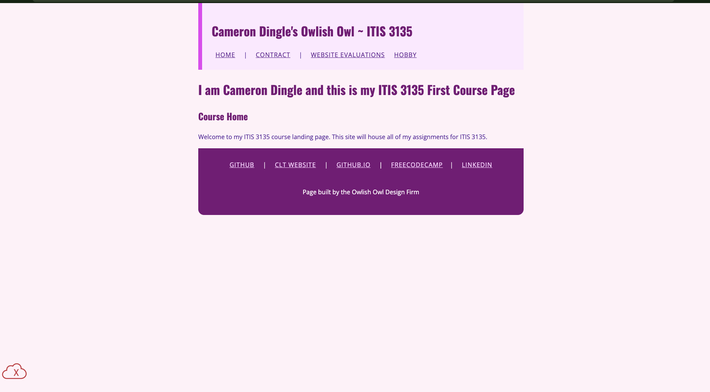

Peer Review 2
Dingle, Cameron

Evaluation
- Submission Link: The link loads successfully and leads to the student's ITIS 3135 course page, but I was not able to find a clear direct link to the client project from the landing page.
- Checklist Item 1: The submission should lead directly to the page being reviewed, or clearly provide the path to that page. In this case, the reviewer has to search for the correct project, which makes the submission less clear.
- File Naming: The URL structure appears organized and uses lowercase naming appropriately.
-
Design:
- Readability is generally acceptable from the landing page.
- The page structure appears simple and clear.
-
CRAP Principles:
- Contrast: Basic readability appears fine
- Repetition: The page seems consistent in styling
- Alignment: Content appears neatly placed
- Proximity: Related content is grouped clearly
-
Page Structure:
- Header appears present
- Main content is present
- Footer should be checked to confirm required items are included
- Header: The page identifies the student and course clearly, which helps establish context.
- Main Content: The landing page explains that the site holds assignments for the course, but it would be stronger if the client project link were more visible and easier to access.
- Branding: There is an identifiable page title and theme, but stronger repeated branding across pages would improve consistency.
- Footer: Be sure the footer includes navigation for user pages and working HTML/CSS validation links if required by the assignment.
- Assignment Requirements: The biggest issue at this stage is that the client project is not clearly linked from the submitted page, which makes evaluation harder.
- Strengths: The course page is straightforward and clearly labeled, so the site has a good starting structure.
- Suggestions: Add a direct and clearly labeled link to the client project from the landing page so reviewers can reach it immediately.
- Stop: Stop making the reviewer search through the course site for the correct project page.
- Start: Start adding a direct client project link on the main course page or submit the exact project URL instead.
- Continue: Continue keeping the page organized and clearly labeled, because that helps the site feel structured and professional.